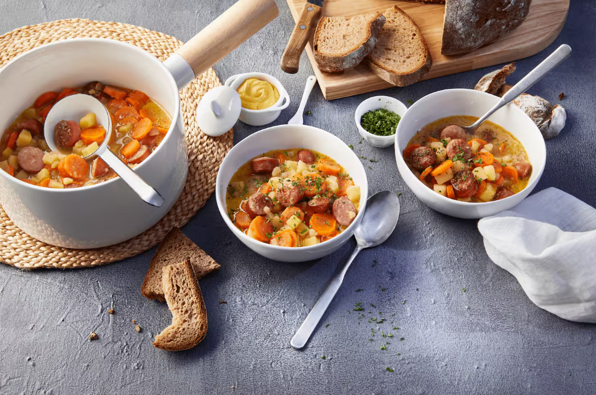

 15 Min.
15 Min.
 simpel
simpel
 01.03.2026
01.03.2026
| 150 g | Möhren |
| 150 g | Kartoffeln |
| 0,25 | Zwiebel |
| 0,25 EL | Butter |
| 150 ml | Gemüsebrühe |
| 1 | Mettwürstchen |
| 0,25 TL | Sonnenblumenöl |
| 0,75 Zweig(e) | krause Petersilie |
| 0,5 EL | Sahne |
| 1 Priese | Muskat |
| 1 Priese | Pfeffer |
| 1 Priese | Zucker |
| 1 Priese | Salz |